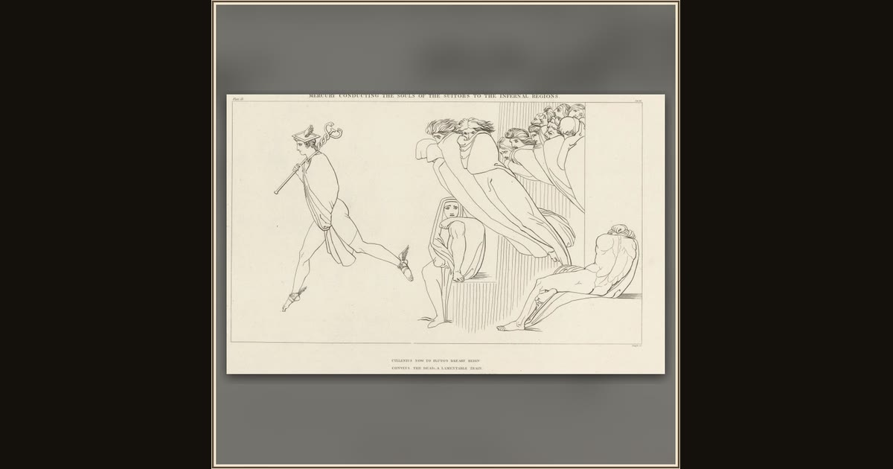

Mercury Conducting the Souls of the Suitors to the Infernal Regions
James Parker, after John Flaxman · 1805 · Rijksmuseum · Amsterdam, Netherlands
At the opening of Book 24, Hermes calls up the slain suitors’ souls and leads them toward Hades with his golden wand, the shades thinly squeaking like bats. Explore its place in Book XXIV of the Odyssey.